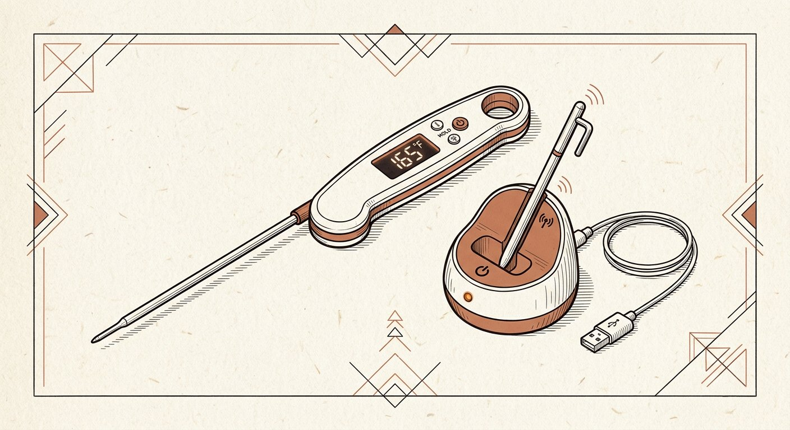

No. 1 · Air fryers
CHEFMAN 6 Qt Dual Basket
CHEFMAN · Dual basket · 6 qt total (2 x 3 qt)
Two independent 3-quart baskets, so a protein and a side can finish on different clocks.
Kitchen gear, no theatre
We compare the specifications that actually change how dinner goes — basket width, door clearance, probe thinness — and tell you plainly what nobody has tested. No scores out of ten. No invented prices.

The question we hear most
Two machines, one word on the box. The differences that decide whether it fits your cooking are almost never the ones printed on the front.
Read the comparisonWhat it settles
Two categories, five products
Every product page lists the two or three specifications that decide the purchase, and flags anything we could not confirm from an official source.

3 products
Dual basket, single basket, and countertop oven. The difference is the shape of the cavity, not the wattage.
Compare air fryers →
2 products
Instant-read checks a temperature. A wireless probe watches it. Buying the wrong one is the common mistake.
Compare thermometers →The shortlist
Ranked by how often the trade-off comes up for a household of two to four — an editorial ordering, not a sales ranking.
CHEFMAN · Dual basket · 6 qt total (2 x 3 qt)
Two independent 3-quart baskets, so a protein and a side can finish on different clocks.
Emeril Lagasse · Countertop oven · 26 qt
A 26-quart French-door oven with 24 presets and six accessories included, for cooks who want one box to do more than fry.
CHEFMAN · Single basket · 8 qt
One 8-quart basket with a 450°F top range — the largest single-basket capacity in this set.
Prices and star ratings are deliberately not shown. Amazon permits displaying them only when Amazon serves the data or it arrives through the Product Advertising API with a timestamp. Why we leave them out.
Guides
6 min read
Quarts are a volume. Dinner is an area problem. Here is the twenty-minute check that stops a wrong purchase.
Read the guide →6 min read
The two costs that show up every single day, and the two that show up once at the till.
Read the guide →8 min read
A multi-function machine is a promise that one box replaces three. Here is how to check whether that promise holds for your kitchen.
Read the guide →6 min read
One is a checking tool. The other is a monitoring tool. Buying the wrong one is the most common thermometer mistake.
Read the guide →The register
Four surfaces, each dated. If a number is missing, the page says why rather than filling it in.
Data
Five products, intended ASIN, supplied link, and the target it actually resolved to. Blank cells are flagged.
24 documents
Every policy, listing, and public guidance document used, with its publisher and the date we read it.
6 items
What is unresolved, why it matters, and what we are specifically not claiming about it.
8 proposals
Proposed changes with the trade-off of each and the alternative paths open to you.
It will not tell you a machine is the best, because nobody here has cooked in one. It will not show a price it cannot keep current, or a star rating it is not licensed to reproduce. It will not rank a product higher because the commission is better — the ordering is editorial and stated as such.
What it will do is put the deciding specifications in one place, name the compromise each machine makes, and publish a dated list of everything still unverified. There are twelve open questions — they are public.